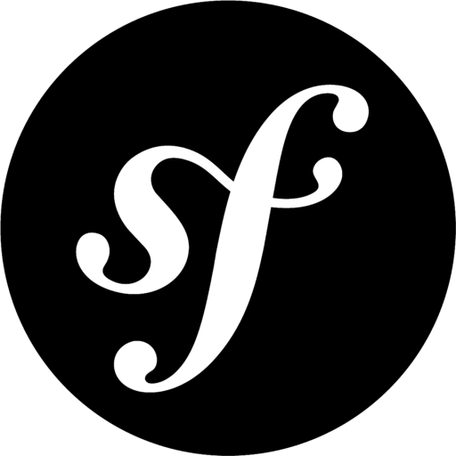

Github
Gestion de code source, branches, pull requests et intégration continue pour des workflows d'équipe efficaces.
Versioning
Développeur web full stack spécialisé en React, Node.js et Symfony basé en France. Portfolio de projets web modernes, performants et responsives.
Développeur web full stack spécialisé en React, Node.js et Symfony. Je crée des applications web modernes, performantes et centrées sur l’expérience utilisateur.
Portfolio de développeur web basé en France — React, Node.js, Symfony, Tailwind CSS.
Je suis Edouard Todorov, développeur web full stack passionné par la création d’applications web modernes et performantes avec PHP, Symfony, JavaScript, React, Node.js et Tailwind CSS. J’interviens sur des projets web complets en front-end et back-end, de la conception à la mise en production.
J'aime transformer des idées en produits concrets, propres et bien structurés, en mettant l'accent sur la lisibilité du code, les bonnes pratiques et la collaboration avec les équipes produit et design. J’accorde une attention particulière à la performance et à l’expérience utilisateur, ainsi qu’à l’optimisation SEO technique et à la conception d’interfaces web responsives.
Toujours curieux, je me forme en continu pour rester à jour et proposer des solutions robustes et pérennes.
Les technologies que j'utilise le plus au quotidien.
Gestion de code source, branches, pull requests et intégration continue pour des workflows d'équipe efficaces.

Développement d'interfaces dynamiques et de logique applicative pour des expériences web modernes et interactives.

Développement de back-end performants en JavaScript, APIs REST et intégration avec des bases de données et services externes.

Création d'APIs et de serveurs web en Node.js avec une structure simple, rapide et adaptée aux applications modernes.

Création d'interfaces utilisateurs dynamiques, réactives et maintenables avec composants réutilisables.

Design rapide et cohérent avec un système d'utilitaires puissant, complété par les composants DaisyUI.
Développement d'applications web robustes avec une grande base d'outils et de bibliothèques existantes.

Framework PHP structuré pour construire des applications scalables avec une architecture claire (MVC, services, etc.).

Conteneurisation des applications pour standardiser les environnements, faciliter le déploiement et améliorer la reproductibilité.
Au-delà des compétences techniques, je mise sur l'humain, la communication et la capacité à m'adapter rapidement aux besoins du projet.
Capacité à vulgariser les sujets techniques et à échanger efficacement avec les profils métiers, design et techniques.
Habitué au travail en équipe, aux revues de code et aux itérations rapides pour faire avancer le projet dans la bonne direction.
Autonome sur les sujets qui me sont confiés, tout en sachant demander de l'aide et me former en continu pour proposer des solutions pertinentes.